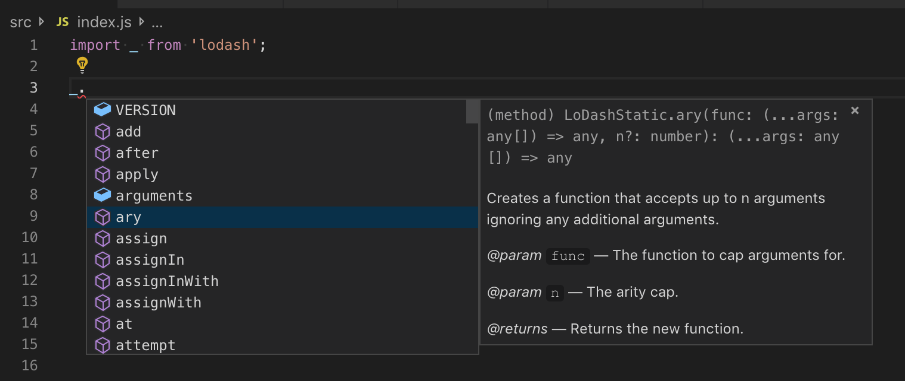
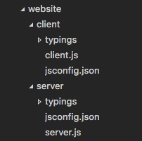
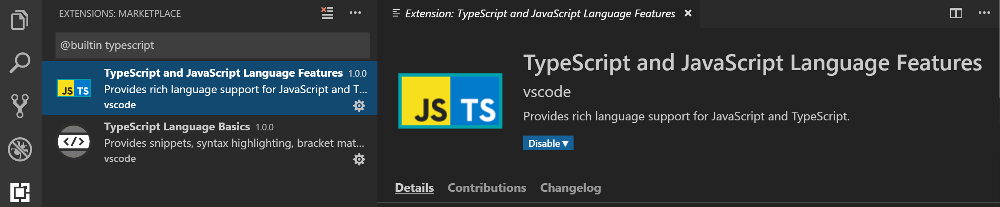

Working with JavaScript
This topic describes some of the advanced JavaScript features supported by Visual Studio Code. Using the TypeScript language service, VS Code can provide smart completions (IntelliSense) as well as type checking for JavaScript.
IntelliSense
Visual Studio Code's JavaScript IntelliSense provides intelligent code completion, parameter info, references search, and many other advanced language features. Our JavaScript IntelliSense is powered by the JavaScript language service developed by the TypeScript team. While IntelliSense should just work for most JavaScript projects without any configuration, you can make IntelliSense even more useful with JSDoc or by configuring a jsconfig.json project.
For the details of how JavaScript IntelliSense works, including being based on type inference, JSDoc annotations, TypeScript declarations, and mixing JavaScript and TypeScript projects, see the JavaScript language service documentation.
When type inference does not provide the desired information, type information may be provided explicitly with JSDoc annotations. This document describes the JSDoc annotations currently supported.
In addition to objects, methods, and properties, the JavaScript IntelliSense window also provides basic word completion for the symbols in your file.
Typings and Automatic Type Acquisition
IntelliSense for JavaScript libraries and frameworks is powered by TypeScript type declaration (typings) files. Type declaration files are written in TypeScript so they can express the data types of parameters and functions, allowing VS Code to provide a rich IntelliSense experience in a performant manner.
Many popular libraries ship with typings files so you get IntelliSense for them automatically. For libraries that do not include typings, VS Code's Automatic Type Acquisition will automatically install community maintained typings file for you.
Automatic type acquisition requires npmjs, the Node.js package manager, which is included with the Node.js runtime. In this image you can see IntelliSense, including the method signature, parameter info, and the method's documentation for the popular lodash library.

Type declaration files are automatically downloaded and managed by Visual Studio Code for packages listed in your project's package.json or that you import into a JavaScript file.
{
"dependencies": {
"lodash": "^4.17.0"
}
}
You can alternately explicitly list packages to acquire type declaration files for in a jsconfig.json.
{
"typeAcquisition": {
"include": [
"jquery"
]
}
}
Most common JavaScript libraries ship with declaration files or have type declaration files available. You can search for a library's type declaration file package using the TypeSearch site.
Fixing npm not installed warning for Automatic Type Acquisition
Automatic Type Acquisition uses npm, the Node.js package manager, to install and manage Type Declaration (typings) files. To ensure that Automatic Type Acquisition works properly, first ensure that you have npm installed on your machine.
Run npm --version from a terminal or command prompt to quickly check that npm is installed and available.
npm is installed with the Node.js runtime, which is available for download from Nodejs.org. Install the current LTS (Long Term Support) version and the npm executable will be added by default to your system path.
If you have npm installed but still see a warning message, you can explicitly tell VS Code where npm is installed with the typescript.npm setting. This should be set to the full path of the npm executable on your machine, and this does not have to match the version of npm you are using to manage packages in your workspace. typescript.npm requires TypeScript 2.3.4+.
For example, on Windows, you would add a path like this to your settings.json file:
{
"typescript.npm": "C:\\Program Files\\nodejs\\npm.cmd"
}
JavaScript projects (jsconfig.json)
The presence of a jsconfig.json file in a directory indicates that the directory is the root of a JavaScript project. jsconfig.json specifies the root files and the options for the language features provided by the JavaScript language service. For common setups, a jsconfig.json file is not required, however, there are situations when you will want to add a jsconfig.json.
- Not all files should be in your JavaScript project (for example, you want to exclude some files from showing IntelliSense). This situation is common with front-end and back-end code.
- Your workspace contains more than one project context. In this situation, you should add a
jsconfig.jsonfile at the root folder for each project. - You are using the TypeScript compiler to down-level compile JavaScript source code.
Location of jsconfig.json
To define our code as a JavaScript project, create jsconfig.json at the root of your JavaScript code as shown below. A JavaScript project is the source files of the project and should not include the derived or packaged files (such as a dist directory).

In more complex projects, you may have more than one jsconfig.json file defined inside a workspace. You will want to do this so that the source code in one project does not appear in the IntelliSense of another project.
Illustrated below is a project with a client and server folder, showing two separate JavaScript projects:

Writing jsconfig.json
Below is a simple template for jsconfig.json file, which defines the JavaScript target to be ES6 and the exclude attribute excludes the node_modules folder. You can copy and paste this code into your jsconfig.json file.
{
"compilerOptions": {
"module": "commonjs",
"target": "es6"
},
"exclude": [
"node_modules",
"**/node_modules/*"
]
}
The exclude attribute tells the language service which files are not part of your source code. If IntelliSense is slow, add folders to your exclude list (VS Code will prompt you to do this if it detects slow completions). You will want to exclude files generated by a build process (such as a dist directory). These files will cause suggestions to show up twice and will slow down IntelliSense.
You can explicitly set the files in your project using the include attribute. If no include attribute is present, then this defaults to including all files in the containing directory and subdirectories. When a include attribute is specified, only those files are included.
Here is an example with an explicit include attribute:
{
"compilerOptions": {
"module": "commonjs",
"target": "es6"
},
"include": [
"src/**/*"
]
}
The best practice, and least error prone route, is to use the include attribute with a single src folder. Note that file paths in exclude and include are relative to the location of jsconfig.json.
For more information, see the full jsconfig.json documentation.
Migrating to TypeScript
It is possible to have mixed TypeScript and JavaScript projects. To start migrating to TypeScript, rename your jsconfig.json file to tsconfig.json and set the allowJs property to true. For more information, see Migrating from JavaScript.
Note:
jsconfig.jsonis the same as atsconfig.jsonfile, only withallowJsset to true. See the documentation fortsconfig.jsonhere to see other available options.
Type checking JavaScript
VS Code allows you to leverage some of TypeScript's advanced type checking and error reporting functionality in regular JavaScript files. This is a great way to catch common programming mistakes. These type checks also enable some exciting Quick Fixes for JavaScript, including Add missing import and Add missing property.

TypeScript can infer types in .js files same as in .ts files. When types cannot be inferred, they can be specified using JSDoc comments. You can read more about how TypeScript uses JSDoc for JavaScript type checking in Type Checking JavaScript Files.
Type checking of JavaScript is optional and opt-in. Existing JavaScript validation tools such as ESLint can be used alongside the new built-in type checking functionality.
You can get started with type checking a few different ways depending on your needs.
Per file
The easiest way to enable type checking in a JavaScript file is by adding // @ts-check to the top of a file.
// @ts-check
let itsAsEasyAs = 'abc'
itsAsEasyAs = 123 // Error: Type '123' is not assignable to type 'string'
Using // @ts-check is a good approach if you just want to try type checking in a few files but not yet enable it for an entire codebase.
Using a setting
To enable type checking for all JavaScript files without changing any code, just add "js/ts.implicitProjectConfig.checkJs": true to your workspace or user settings. This enables type checking for any JavaScript file that is not part of a jsconfig.json or tsconfig.json project.
You can opt individual files out of type checking with a // @ts-nocheck comment at the top of the file:
// @ts-nocheck
let easy = 'abc'
easy = 123 // no error
You can also disable individual errors in a JavaScript file using a // @ts-ignore comment on the line before the error:
let easy = 'abc'
// @ts-ignore
easy = 123 // no error
Using jsconfig or tsconfig
To enable type checking for JavaScript files that are part of a jsconfig.json or tsconfig.json, add "checkJs": true to the project's compiler options:
jsconfig.json:
{
"compilerOptions": {
"checkJs": true
},
"exclude": [
"node_modules",
"**/node_modules/*"
]
}
tsconfig.json:
{
"compilerOptions": {
"allowJs": true,
"checkJs": true
},
"exclude": [
"node_modules",
"**/node_modules/*"
]
}
This enables type checking for all JavaScript files in the project. You can use // @ts-nocheck to disable type checking per file.
JavaScript type checking requires TypeScript 2.3. If you are unsure what version of TypeScript is currently active in your workspace, run the TypeScript: Select TypeScript Version command to check. You must have a .js/.ts file open in the editor to run this command. If you open a TypeScript file, the version appears in the lower right corner.
Global variables and type checking
Let's say that you are working in legacy JavaScript code that uses global variables or non-standard DOM APIs:
window.onload = function() {
if (window.webkitNotifications.requestPermission() === CAN_NOTIFY) {
window.webkitNotifications.createNotification(null, 'Woof!', '🐶').show()
} else {
alert('Could not notify')
}
}
If you try to use // @ts-check with the above code, you'll see a number of errors about the use of global variables:
Line 2-Property 'webkitNotifications' does not exist on type 'Window'.Line 2-Cannot find name 'CAN_NOTIFY'.Line 3-Property 'webkitNotifications' does not exist on type 'Window'.
If you want to continue using // @ts-check but are confident that these are not actual issues with your application, you have to let TypeScript know about these global variables.
To start, create a jsconfig.json at the root of your project:
{
"compilerOptions": { },
"exclude": [
"node_modules",
"**/node_modules/*"
]
}
Then reload VS Code to make sure the change is applied. The presence of a jsconfig.json lets TypeScript know that your Javascript files are part of a larger project.
Now create a globals.d.ts file somewhere your workspace:
interface Window {
webkitNotifications: any;
}
declare var CAN_NOTIFY: number;
d.ts files are type declarations. In this case, globals.d.ts lets TypeScript know that a global CAN_NOTIFY exists and that a webkitNotifications property exists on window. You can read more about writing d.ts in the TypeScript documentation. d.ts files do not change how JavaScript is evaluated, they are used only for providing better JavaScript language support.
Using tasks
Using the TypeScript compiler
One of the key features of TypeScript is the ability to use the latest JavaScript language features, and emit code that can execute in JavaScript runtimes that don't yet understand those newer features. With JavaScript using the same language service, it too can now take advantage of this same feature.
The TypeScript compiler tsc can down-level compile JavaScript files from ES6 to another language level. Configure the jsconfig.json with the desired options and then use the –p argument to make tsc use your jsconfig.json file, for example tsc -p jsconfig.json to down-level compile.
Read more about the compiler options for down level compilation in the jsconfig documentation.
Running Babel
The Babel transpiler turns ES6 files into readable ES5 JavaScript with Source Maps. You can easily integrate Babel into your workflow by adding the configuration below to your tasks.json file (located under the workspace's .vscode folder). The group setting makes this task the default Task: Run Build Task gesture. isBackground tells VS Code to keep running this task in the background. To learn more, go to Tasks.
{
"version": "2.0.0",
"tasks": [
{
"label": "watch",
"command": "${workspaceFolder}/node_modules/.bin/babel",
"args": ["src", "--out-dir", "lib", "-w", "--source-maps"],
"type": "shell",
"group": { "kind": "build", "isDefault": true },
"isBackground": true
}
]
}
Once you have added this, you can start Babel with the kb(workbench.action.tasks.build) (Run Build Task) command and it will compile all files from the src directory into the lib directory.
Tip: For help with Babel CLI, see the instructions in Using Babel. The example above uses the CLI option.
Disable JavaScript support
If you prefer to use JavaScript language features supported by other JavaScript language tools such as Flow, you can disable VS Code's built-in JavaScript support. You do this by disabling the built-in TypeScript language extension TypeScript and JavaScript Language Features (vscode.typescript-language-features) which also provides the JavaScript language support.
To disable JavaScript/TypeScript support, go to the Extensions view (kb(workbench.view.extensions)) and filter on built-in extensions (Show Built-in Extensions in the ... More Actions dropdown), then type 'typescript'. Select the TypeScript and JavaScript Language Features extension and press the Disable button. VS Code built-in extensions cannot be uninstalled, only disabled, and can be re-enabled at any time.
